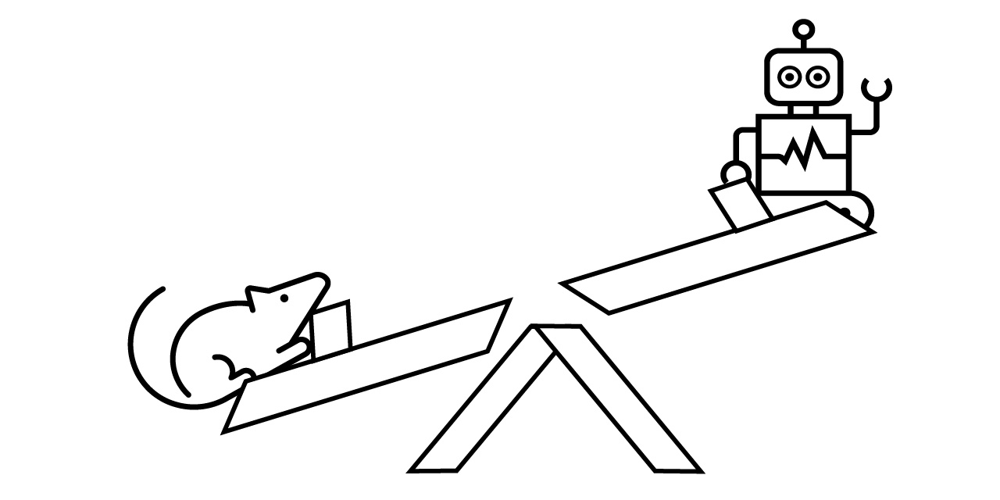
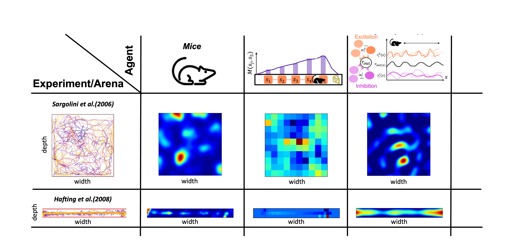

Welcome to NeuralPlayground’s documentation!#


NeuralPlayground#
A standardised environment for the hippocampus and entorhinal cortex models.
#
Introduction#
The abstract representation of space has been extensively studied in the hippocampus and entorhinal cortex. A growing variety of theoretical models have been proposed to capture the rich neural and behavioral phenomena associated with these circuits. However, objective comparison of these theories against each other and against empirical data is challenging.
Although the significance of virtuous interaction between experiments and theory is widely recognized, the tools available to facilitate comparison are limited. Some important challenge we aim to solve are:
Lack availability and accessibility of data in a standardized, labeled format.
Standard and easy ways to compare model output with empirical data.
A repository of models and data sets that are relevant for the field of hippocampus and entorhinal cortex.
To address this gap, we present an open-source standardised software framework - NeuralPlayground - to enable comparison between the hippocampus and entorhinal cortex models. This Python software package offers a reproducible way to compare models against a centralised library of published experimental results, including neural recordings and animal behavior. The framework currently contains implementations of three Agents, as well as three Experiments providing simple interfaces to publicly available neural and behavioral data. It also contains a customizable 2-dimensional Arena (continuous and discrete) able to produce common experimental environments in which the agents can move in and interact with. Each module can also be used separately, allowing flexible access to influential models and data sets.
We currently rely on visual comparison of a hand-selected number of outputs of the model with neural recordings as shown in github.com/NeuralPlayground/examples/comparison. In the future, a set of quantitative and qualitative measures will be added for systematic comparisons across Agents, Arenas, and Experiments. We want to restate that this won’t constitute a definitive judgment on the ability of an Agent to replicate the brain mechanism. Instead, this allows an objective and complete comparison to the current evidence in the field, as is typically done in publications, which can be used to guide model design and development.
Altogether, we hope our framework, offers a foundation that the community will build upon, working toward a shared, standardized, open, and reproducible computational understanding of the hippocampus and entorhinal cortex.
Try our short tutorial online in Colab.
Installation#
Create a conda environment#
We advise you to install the package in a virtual environment, to avoid conflicts with other packages. For example, using
conda:conda create --name NPG-env python=3.12 conda activate NPG-env conda install pipPip install#
You can use
pipget the latest release of NeuralPlayground from PyPI.# install the latest release pip install NeuralPlayground # upgrade to the latest release pip install -U NeuralPlayground # install a particular release pip install NeuralPlayground==0.0.5Note
If you wish to run our implementation of the Tolman-Eichenbaum machine, there are additional dependencies to install. These can be found in the TEM_README.md file.
Install for development#
If you want to contribute to the project, get the latest development version from GitHub, and install it in editable mode, including the “dev” dependencies:
git clone https://github.com/SainsburyWellcomeCentre/NeuralPlayground/ --single-branch cd NeuralPlayground pip install -e .[dev]Note
if you are using the
zshshell (default on macOS), replace the last command with:pip install -e '.[dev]'Usage#
Try our package! We are gathering opinions to focus our efforts on improving aspects of the code or adding new features, so if you tell us what you would like to have, we might just implement it 😊. This open-source software was built to be collaborative and lasting. We hope that the framework will be simple enough to be adopted by a great number of neuroscientists, eventually guiding the path to the computational understanding of the HEC mechanisms. We follow reproducible, inclusive, and collaborative project design guidelines. All relevant documents can be found in Documents.
Agent Arena interaction#
You can pick an Agent and an Arena of your choice to run a simulation. Arenas and simulations have a simple interface to interact with each other as in OpenAI gymnasium.
# import an agent based on a plasticity model of grid cells from neuralplayground.agents import Weber2018 # import a square 2D arena from neuralplayground.arenas import Simple2D # Initialize the agent agent = Weber2018() # Initialize the arena arena = Simple2D()To make the agent interact with the arena, a very simple loop can be the following:
iterations = 1000 obs, state = arena.reset() for j in range(iterations): # Observe to choose an action action = agent.act(obs) # Run environment for given action obs, state, reward = arena.step(action) # Update agent parameters update_output = agent.update()This process is the base of our package. We provide a more detailed example in
Note
Check our Tolman-Eichenbaum Machine Implementation in this branch (work in progress), you will also need to install pytorch ro run it.
Simulation Manager#
We provide some backend tools to run simulations and compare the results with experimental data in the background, including some methods to keep track of your runs, and a comparison board to visualise the results. You can check the details in Simulation Manager and Comparison Board jupyters. In addition, we have some default simulations you can try out, for which you don’t need to write much code, since they are implemented using a SingleSim class. For example
# Import default simulation, which is a SingleSim from neuralplayground.backend.default_simulation import stachenfeld_in_2d from neuralplayground.backend.default_simulation import weber_in_2d stachenfeld_in_2d.run_sim(save_path="my_results")This class allows you to run a simulation with a single line of code, and it will automatically save the results in a folder with the name you provide, keeping track of any errors and logs. You can also use our Simulation Manager to run multiple simulations at once, save the results, keep run of each run and possible errors for easy debugging, and other functions.
To make the agent interact with the arena, a very simple loop can be the following:
iterations = 1000 obs, state = arena.reset() for j in range(iterations): # Observe to choose an action action = agent.act(obs) # Run environment for given action obs, state, reward = arena.step(action) # Update agent parameters update_output = agent.update()This process is the base of our package. We provide a more detailed example in
Note
Check our Tolman-Eichenbaum Machine Implementation in this branch (work in progress), you will also need to install pytorch ro run it.
Simulation Manager#
We provide some backend tools to run simulations and compare the results with experimental data in the background, including some methods to keep track of your runs, and a comparison board to visualise the results. You can check the details in Simulation Manager and Comparison Board jupyters. In addition, we have some default simulations you can try out, for which you don’t need to write much code, since they are implemented using a SingleSim class. For example
# Import default simulation, which is a SingleSim from neuralplayground.backend.default_simulation import stachenfeld_in_2d from neuralplayground.backend.default_simulation import weber_in_2d stachenfeld_in_2d.run_sim(save_path="my_results")This class allows you to run a simulation with a single line of code, and it will automatically save the results in a folder with the name you provide, keeping track of any errors and logs. You can also use our Simulation Manager to run multiple simulations at once, save the results, keep run of each run and possible errors for easy debugging, and other functions.
# Import Simulation Manager from neuralplayground.backend import SimulationManager # Initialise simulation manager my_sims = [weber_in_2d, stachenfeld_in_2d] my_manager = SimulationManager(simulation_list = my_sims, runs_per_sim = 5, # Run 5 instances per simulation manager_id = "example_simulation", verbose = True) my_manager.generate_sim_paths() my_manager.run_all() my_manager.check_run_status()To compare the results, use the comparison board described in Comparison Board jupyter notebook. With time, we will build an interface for easy model comparison and visualisation of the results!
I want to contribute#
There are many ways to contribute to our project.
Implement a hippocampal and entorhinal cortex Agent of your choice.
Work on improving the Arena.
Add an Experimental data set.
Implementing metrics to compare the output of the Agent with the experimental data.
Refactor the code to improve the readability and efficiency.
All contributions should be submitted through a pull request and will be reviewed by the maintainers. Before sending a pull request, make sure you have the done following:
Checked the Licensing frameworks.
Used the right development environment. Install
pip install pre-commit, then initialise the pre-commit hooks withpre-commit installand runpre-commit run -ato format the code and check for errors before commit.Followed the PEP8 and numpy docstring style convention. More details found in Style Guide.
Implemented and ran tests.
Comment your work.
All contributions to the repository are acknowledged through the all-contributors bot. Refer to the README.md files found in each of the modules for further details on how to contribute to them.
Cite#
See Citation for the correct citation of this framework.
License#
⚖️ MIT
Contributors#
Thanks go to these wonderful people (emoji key):
Clementine Domine
🎨 🧑🏫 💻 🔣
rodrigcd
🎨 🧑🏫 💻 🔣
Luke Hollingsworth
📖 💻
Andrew Saxe
🧑🏫
DrCaswellBarry
🧑🏫
Niko Sirmpilatze
🚇 🚧 🔧
Adam Tyson
🚧 🚇
rhayman
💻
Devon Jarvis
📖 💻This project follows the all-contributors specification. Contributions of any kind are welcome!


{kind=link}
{kind=link}